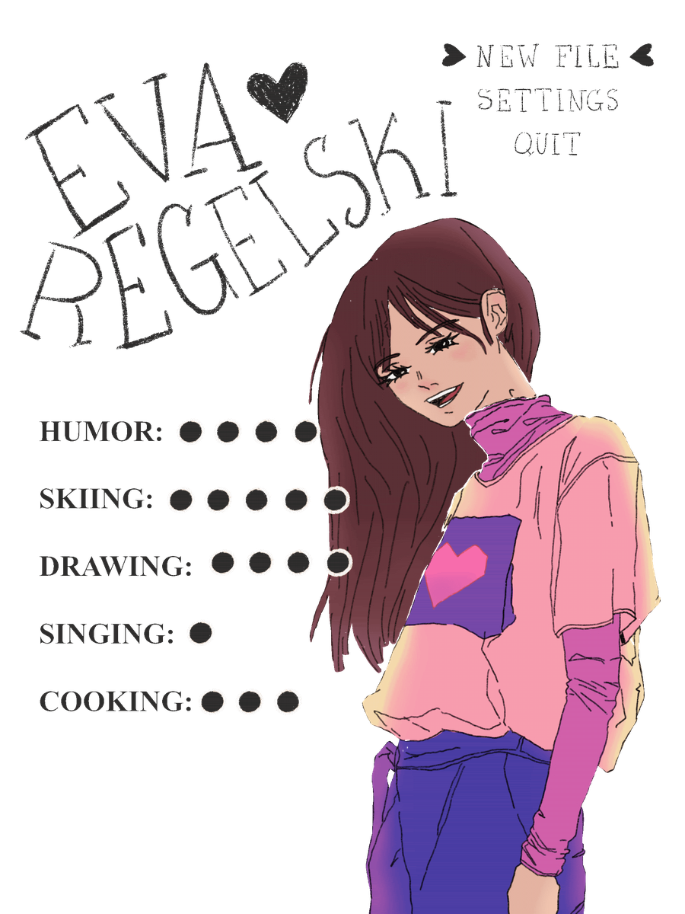
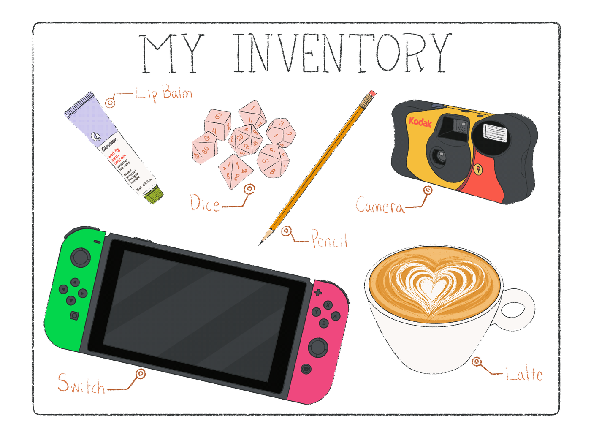
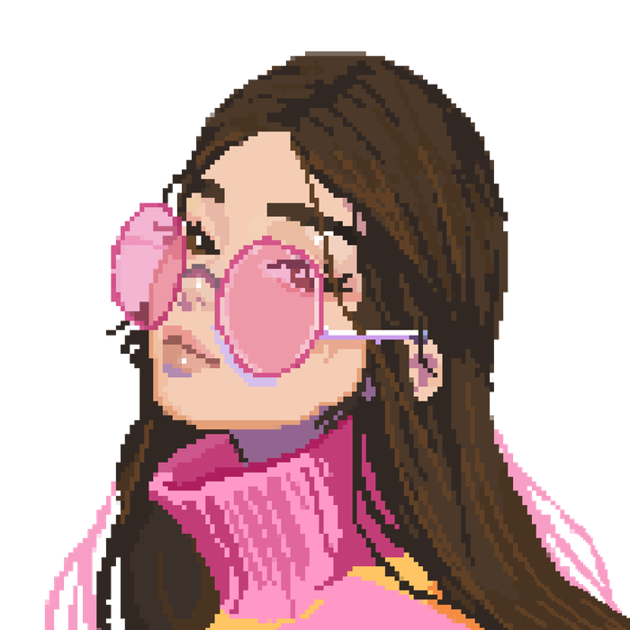

ABOUT ME
Hi, I'm Eva
I grew up in Rochester, NY, which means I learned to ski early and developed a high tolerance for grey skies. These days you'll find me drawing, painting, watching anime, or deep in a video game. I'm proudly nerdy about a lot of things, so if you have a passion, I'd love to hear about it.


My inventory
A few things I never leave the house without: my Nintendo Switch, a pencil, my disposable camera, and something caffeinated. I bond with people over Dungeons & Dragons, capture everyday moments on film, and fuel it all with lattes. The analog and the nerdy, together at last.
Why UX design?

I've always lived in both halves of my brain — the creative side that wants to make things, and the analytical side that wants to solve problems. For a long time I didn't know how to use them together.
In college I minored in Studio Art and Computer Science, then majored in Marketing Management trying to find the overlap. After graduating, I landed a marketing job at a Cleveland non-profit called Kinnect. I loved parts of it — the storytelling, connecting with people — but something was missing. I needed more.
A conversation with the right people led me to UX design, and it clicked immediately. Research, strategy, creativity, logic — it uses everything. As a designer with roots in marketing, art, and programming, I bring the full picture to every project: the empathy to understand users, the craft to design for them, and enough code to fight for the details in implementation.
- NOW
- Lead UX/UI designer, Cyberstar Software
- BEFORE
- KeyBank · Mappa · Kinnect · JumpStart
- STUDIED
- B.S. Marketing Management, Case Western Reserve — minors in Computer Science and Studio Art
- ALSO
- UX/UI Immersive, General Assembly
Get in touch
Have a question, an opportunity, or just want to talk video games? I'm in.